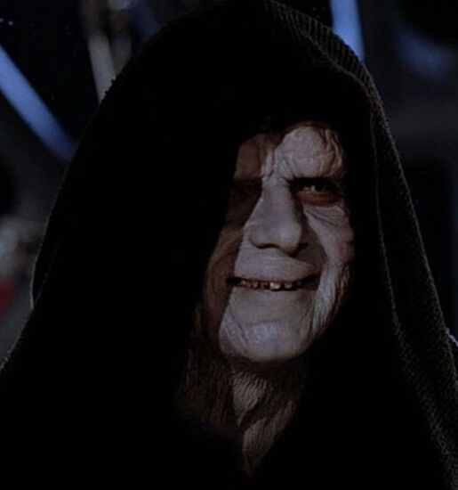
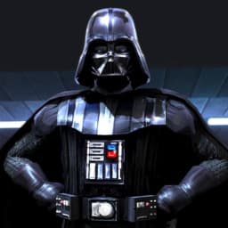
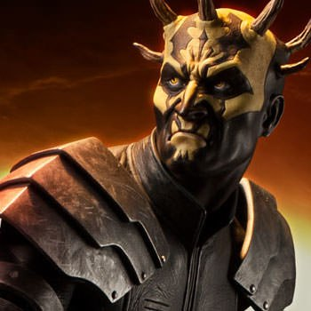
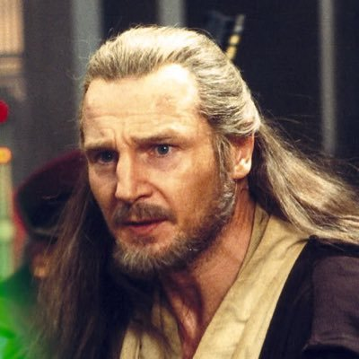
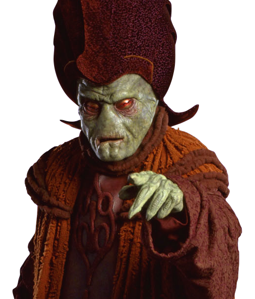

My name is Maul. Im a force-sensitive, Dathomirian Zabrak male. Anointed Darth by the Sith Master Darth Sidious, founder of the syndicate Crimson Dawn
and co-founder of the Shadow Collective.
I am a formiddable warrior, highly trained in the ways of the Force, strong with the dark side and deadly skilled in the art of
lightsaber combat. Being Sith apprentice of Darth Sidious has earned me the prestigious title of Dark Lord of the Sith.
In later years I've been focusing more on my entrepreneurship and building my own empire, known as the Crimson Dawn.
I have a love for nature. As a child, I spent a lot of time in the forests of Dathomir. A strong connection
to nature is known to be a by-product of being highly Force-sensitive.
-

"Sharp and determined student. Unlimited power"
- Darth Sidious
-

"I've heard he's a great guy!"
- Darth Vader
-

"Could'nt have asked for a better brother"
- Savage Opress
-

"Tough and resilient opponent..."
- Qui-Gon Jinn
-

"I don't think you could find a more reliant co-worker"
- Nute Gunray
Pirate Hunter
Spent some years dispatching pirates interfering with the Trade Federation. Even managed to rescure some members of the federation who'd got themselves kidnapped.
Almost defeating Qui-Gon Jinn
Short but intense duel with Qui-Gon Jinn on the planet of Tatoonie. Displayed good agillity and viscious lightsaber skills. Would've won if not for the queen Padmé Amidalas starship interference.
Defeating Qui-Gon Jinn
Defeated Jedi Master Qui-Gon Jinn in a one versus two duel on the planet of Naboo. His padwan Obi-Wan Kenobi did however cut of my legs but now I have two cybernetic legs instead, which I reckon is even better.
Became ruler of Mandalore
Defeated the mandalorian warrior Pre Vizla in a long and difficult duel. Gained the position as leader of Death Watch and ruler of Mandalore.
Affiliations
-
Member of Nightbrothers:
Colony of Dathomirian Zabrak males who
lived in a village on the far side of the planet Dathomir -
Anointed Darth of the Sith Order:
Ancient religious order of Force-wielders
devoted to the dark side of the Force -
Protector of Trade Federation:
Interstellar shipping and trade conglomerate
-
Co-founder of Shadow Collective:
Alliance to compete with Darth Sidious for galactic power
-
Leader of Death Watch:
Mandalorian freedom fighters.
-
Founder of Crimson Dawn:
A group of entrepreneurs combined to promote a common intrest
Apprentices
-
Darth Sidious
Dark Lord of the Sith and Emperor of the Galactic Empire.
Relation: mentor. -
Savage Opress
Force-sensitive Dathomirian Nightbrother and Sith
apprentice under Count Dooku.
Relation: brother. -
Dryden Vos
Public face Crimson Dawn during the reign of the Galactic Empire.
Relation: co-worker. -
Qi'ra
Most trusted lieutenant of the Crimson Dawn.
Relation: co-worker. -
Qi'ra
Most trusted lieutenant of the Crimson Dawn.
Relation: co-worker.